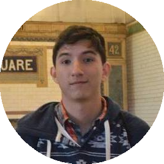

Conoce tus opciones
COMEDORES DE LA ESPOL
Pagina web diseñada para proporcionar a la comunidad de estudiantes de ESPOL una forma rapida y sencilla de consultar los distintos menus que se sirven dia a dia en los restaurantes de la universidad, adicionalmente se proporciona una herramienta para ubicar los resturantes desde la ubicacion actual del usuario.
DESARROLLADORES
Johan Canales
